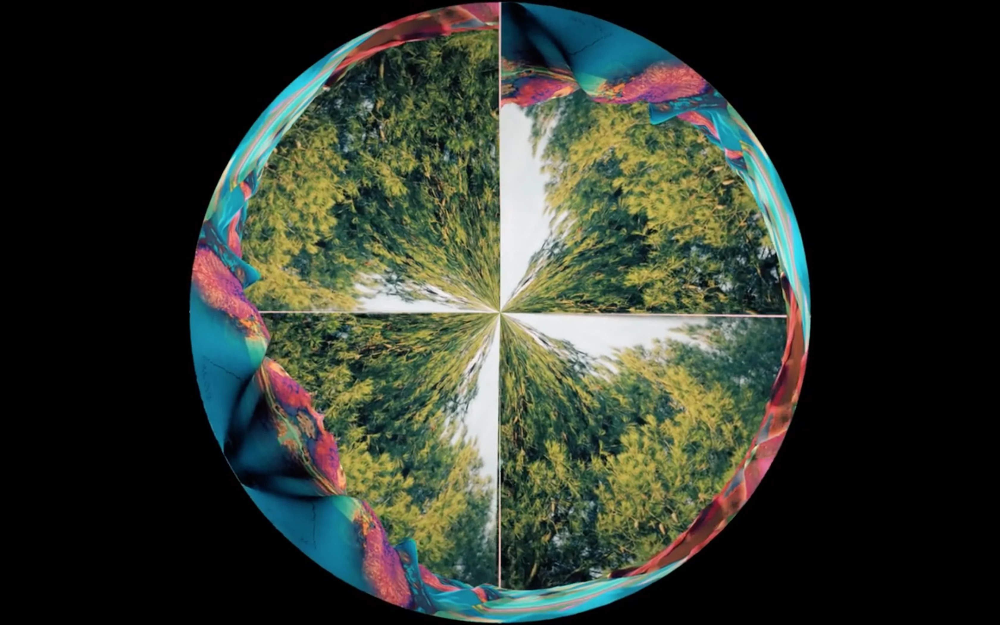

El Cultural San Martín · Taller Fulldome
Performance inmersiva que explora la relación entre cuerpo, imagen y sonido en tiempo real dentro de un entorno fulldome.
Estados Híbridos es una performance audiovisual inmersiva que investiga la relación entre cuerpo, imagen y sonido en tiempo real. La obra se desarrolla en un entorno fulldome donde la proyección envolvente dialoga con la presencia performática, generando una experiencia híbrida entre lo visual, lo sonoro y lo corporal.
A través de procesos de interacción y manipulación en vivo, la pieza propone una exploración de estados perceptivos y transformaciones continuas, donde la imagen deja de ser fija para convertirse en un flujo dinámico en relación con la acción performática.
La obra permite abordar el fulldome como espacio de performance y no solo como soporte de visualización, introduciendo el trabajo con tiempo real, interacción y presencia escénica.
También resulta relevante para pensar prácticas híbridas donde convergen lenguajes audiovisuales, performáticos y tecnológicos, ampliando las posibilidades del domo como entorno educativo y experimental.
Estados Híbridos se desarrolla en el marco de prácticas vinculadas a espacios institucionales como El Cultural San Martín, articulando producción artística, experimentación y circulación en contextos de exhibición.
En este sentido, la obra se posiciona como un caso de cruce entre escena, tecnología e inmersión, ampliando el campo de las prácticas fulldome hacia lo performativo.
Ver registro breve de la obra en YouTube.
Ver short en YouTube →